Vamos encontrar a primeira pista.
Posso explicar o que comparar e abrir os registros relacionados. Escolham uma pergunta acima ou me contem onde travaram.

CHAVE DE RECONSTRUÇÃO
Use o código que vocês anotaram no caderno.
01 ANOTAÇÃO 02 VALIDAÇÃO 03 RECAPITULAÇÃO
ARQUIVO RECUPERADO
Nenhum registro disponível nesta busca.
QUADRO DE RECONSTRUÇÃO
Reconstrua a ordem dos registros para recuperar o trecho interrompido.
Consulte o registro e compare com a câmera.
CONCLUSÕES CONFIRMADAS
O código foi exibido para registro no papel. Use sua anotação na próxima etapa. Ele não será mostrado novamente nesta sessão.
RECONSTRUÇÃO TEMPORAL
Confirme a identidade e os dois acessos antes de reconstruir a sequência.
Segure um cartão, arraste até a posição desejada e solte na área destacada. As posições seguem de cima para baixo.
Alternativa por teclado ou clique: Clique em Mover e depois em Colocar aqui no destino. Os botões Antes e Depois movem uma posição.
1 → 2 → 3 → 4 → 5 → 6 · Do primeiro ao último registroFragmento 03 e registro da câmera recuperados.
REGISTROS SONOROS
Ouça os fragmentos disponíveis ou consulte suas transcrições.
INTELIGÊNCIA ARTIFICIAL · APOIO À INVESTIGAÇÃO
Uma dúvida, um documento ou uma ligação que não fecha? Eu ajudo a encontrar o caminho.
Podem usar suas palavras. Citem uma pessoa, um documento ou o que ficou confuso.
EXPERIMENTEM PERGUNTAR
Posso explicar o que comparar e abrir os registros relacionados. Escolham uma pergunta acima ou me contem onde travaram.
ETAPA CONFIRMADA
Tempo adicionado15 segundos adicionados ao tempo restante.
LIMITE DE ANÁLISE ATINGIDO
A janela de investigação terminou. A memória recuperada e as conclusões de vocês foram preservadas.
Chamem a equipe responsável para orientar o encerramento.